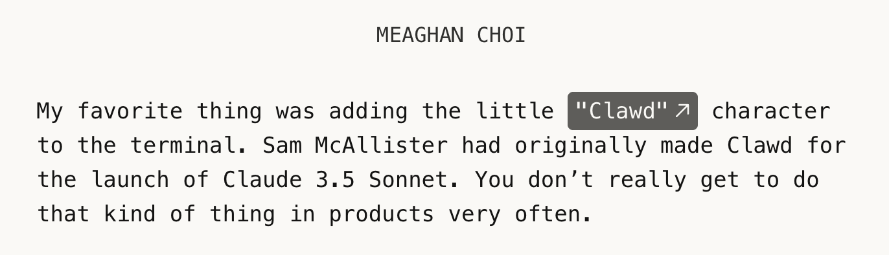

“我们是在为人们设计干活的工具。用户注意到工具的那一刻，就是我们失败的那一刻。”
最近看了对 Claude Code 设计负责人 Meaghan Choi 的一期访谈，她提到了团队一位设计师的信条，如上。
想起几年以前，在一篇讲如何设计 to B 软件的博客，也读到过同样的观点，措辞没到“失败”这么重。
可以类比的还有话剧，如果在本该沉浸的当下你意识到“舞美好棒，音效好真”，反而说明有些出戏。
有的道理一直都在，无论是不是所谓的 AI 时代。
只是人难免有“发了狠忘了情”的时候——要么是因为搞创作，要么是为了做绩效。
说回这期对谈，兼具实用判断、幕后故事和锋利见解，可以大胆推荐给对技术产品设计或对 Claude 感兴趣的朋友。
而这次特别想记下来的原因是，它还会微微刺痛我。
什么时候值得打磨
“AI 应该是什么形态，这段旅程我们才走了 1%。所以知道什么时候需要工艺和打磨、什么时候你要验证的其实只是“形态”本身，这一点非常重要。”
“你可能会发布或测试一个看起来很糟的东西，但你真正在测的是底层的“产品形态心智模型”。而我觉得给那个东西抛光（打磨）并不值得。”
这种道理好像早就知道，但我几乎从未这么做过。
在时间投入上，我有一种更表层的“用户决策法”：“这东西没人看”，“品质差了也没人在乎”，所以应该少投入一些精力。
而现实中我又很难执行。哪怕我看到丑东西也能发布；我知道不调对齐、换行也没关系；我知道技术访谈里不溯源、不核对事实、不加脚注也没人留意。
只是当你视野里出现那些瑕疵，无法放它过去。
这些年，“二八法则”我执行得很差。在有了 LLM / Agent 以后，可以把重复的工作交给它们，看似得到了一些缓冲。
甚至，我对于自己来说是最不重要的用户，所以有时给自己用的东西会更烂——工作交付竭尽全力，个人写作一副死相，或许也有几分这个原因。
这个问题怎么克服，或是不是一个应当被解决的问题…我要再领会一下 Meaghan 精神。
和 Agent 的分工
“我们把能自动化的部分自动化，好把时间省下来啃真正的设计思考硬题。”
播客里 Meaghan 进一步谈到了她如何划分自己的工作，哪些让 Claude 做，哪些在 Slack 直接完成，哪些会去 Figma 上手。比如，“当我确定自己更快的时候才用它（Figma）”，以及“它（Claude）会自动把清理结果拿给我看，然后一口气给我开一堆 PR，我只要过一遍前后对比，试着合并就行”。
Kimi 找到一个它觉得矛盾的地方，“如果你想让我严格按设计稿来，我也可以，但我认为我的做法更好。”“今天的 Claude 并不擅长告诉你‘你的想法本身就不对’。你让它做什么，它就执行什么。”
不过读的时候我没注意到这点。可能因为我印象中 Claude 是一个顶级的执行者，它可以执行任何任务，包括我们理解中比较高级的、拥有“独立思想”的创造和判断，以及相对“低级”的执行。所以关键是，你想让它做什么，它判断“我的做法更好”同样基于某种设定好的价值观和世界观展开。
说回自动化，我的原则一直是“我不想做的且 Agent 能做的”，让它做。
我不会刻意“抽象提炼”自己的工作流，然后塞一大堆 Skill / Agents 进去。很多时候这种行动更像把工作强硬地塞进一个框里，这个框要么很大、留白很多，所以并不精准，要么很挤很勉强，所以必须裁掉细节和有火花的东西。最后跑出来的结果，既不如人意，也没提效多少。
以一份访谈为例，内容编辑需要准确理解受访者表达的原意，确保产出物没有曲解它，哪怕只是一点微妙的细节。最后，交付用户愿意看的内容——这一点模型比较擅长，但如果前面的步骤你只是一味“approve”，大概率会出现一些偏差。
优秀的编辑不会把审核和校对的责任转移到受访者本人身上，还应当适度补充一些信息，核对可能错漏的表达，让受访者的世界能和读者连接。
对比“全自动”Coding，这样做有点落后。关于写作攒了一些话，以后再说。
来自真实的工作
前阵子做了一期对 Qoder 和 Q 仔开发者的访谈，有一位同事划线了其中一段，“如果每次开会都有个叫 Q 仔的数字员工，它也参加了会议”，并回复说，“真有数字员工的味道了”。
我又想起 Meaghan 这期对话。在她描述中，Claude Tag 或者说组织里的那个 Claude 就是这样参与工作的：它存在于团队日常沟通的现场，知道不同频道里发生的事，也会主动提醒成员某项决定已经改变。
“一边自己用、一边把它做出来，一边从使用中发现自己想要的功能，再把它做成产品。”
这听起来很合理。当我们（其实是 Agent）能做的功能越来越多、开发成本越来越低，至少有一小群用户需要且喜欢，构成了一个产品的起点。
jing1meow 老师前几天也提到，Anthropic 发的这些产品，大多是他们自己真的这么用，而不是想象中应该这样用然后发布一个东西给你。
那连设计者、开发者自己都不爱用的生产力工具，还有做的价值吗？
最后一条笔记关于产品设计。
Meaghan 习惯从这三个角度考量：用户怎么认识它（心智模型），用户怎么和它交互（交互模型），以及它由哪些不可再拆分的原子组成。
思考方式是一方面，能否找到答案又是另一方面——它同时基于“你对用户的了解”和“你对自己产品的了解与期待”，而这两项都很难直接通过推理和猜想获得。
你无法真正理解没做过的事情。
以下是播客逐字稿的译文。
播客逐字稿 · 译文
主持人：Dive Club 主播 Ridd（Michael Riddering）。
Meaghan：Meaghan Choi，Anthropic Claude Code 和 Cowork 设计负责人；此前任职于 Cloudflare 和 Meta，专注开发者平台与新兴技术体验，2024 年底加入 Anthropic。
播出日期：2026 年 7 月 8 日｜时长：54 分钟
来源：https://www.dive.club/deep-dives/meaghan-choi
翻译：Kimi-K3
编校：Chiyo（非常粗略的，比工作不认真的，基于原话核对，略加译注，未做整合润色）
#ClaudeCode #Clawd #Artifacts #ClaudeTag #设计师
[00:00:00] Meaghan 加入 Anthropic 的经过
Meaghan：我是 2024 年底加入的。那时候除了核心科技圈，几乎没人知道 Anthropic 是什么。当时所有人的注意力都在 ChatGPT 和 OpenAI 身上，而 Anthropic 主要是一家 API 公司，并没有真正的消费者业务。虽然有一个 Claude 应用，但它还没迎来起飞的时刻。
所以我入职的时候，记得有人问我：“你要去哪儿？”我说：“哦，去 Anthropic。”
对方说：“那是啥？从来没听说过。”我当时特别兴奋，因为我职业生涯里很大一部分时间都在做开发者平台，而且专门做新兴技术。我一直觉得，当你在技术研究领域或者新技术领域做东西时，开发者是创新意识最强、也最挑剔的一群人。
所以你能实时看到自己发明的东西被真正用起来。大概在我入职 Anthropic 三四个月的时候，有人演示了一个挺奇怪的 CLI 流程——让 Claude 直接改你的代码。整个过程要 45 分钟，慢得要命，而且需要一套极其复杂的配置：搭远程工作区、下载一堆脚本、做一大堆很重的本地开发准备，然后它有时候能写出还不错的代码——大概吧。
但我记得当时看到那个演示，心想：我去，这也太酷了，我一定要试试。于是我去试了，还联系上了做演示的那几个人——Boris Cherny、Adam Wolff、Cat Wu 和内部其他几位同事。他们当时是一个实验性质的小组，组里没有设计师，因为他们觉得：“CLI 不需要设计师。”
我记得我给经理发了条私信，说：“我觉得这东西会火，我想兼职给它做设计。”经理说：“行啊，去做吧。”事情就是这样开始的，然后我就再也没停下来。
主持人：我特别喜欢“CLI 根本不需要设计师”这个预设。说实话，哪怕一年半以前，我可能也是这个反应——当时确实看不出设计师能插在哪儿。那你最后是怎么切入的？在终端里做设计，你会去寻找哪些独特的挑战或机会？
[00:02:01] 终端 UX 设计的独特之处
Meaghan：我觉得终端设计里有大量“看不见的思考”，藏在做产品的背后。这一类能力正是我在 Anthropic 期待和招聘时看重的，也是长期以来产品设计师身上最被低估的品质（unsung hero）：心智模型、交互模型，以及那些构成“你如何理解自己正在与什么交互”的基础原语。
译注：① 心智模型 the mental model，用户脑子里认为这个东西是什么。“A mental model is a model of what users know (or think they know) about a system。”源于认知心理学，由 Don Norman《设计心理学》带入设计领域。 ② 交互模型 the interaction model，用户与系统一来一回的方式；③ 基础原语 base primitives，构成整个交互的最小积木，系统底层最小、不可再拆分的基础操作/基础单元。
这方面要做的思考很多。而 CLI 最终让它变得可用的形态是“聊天”。所以在这一来一回的对话之间，有太多东西可以设计——让它感觉更温暖、更有趣，能传达出“状态感”。其实我以前就设计过 CLI，这不是第一次，所以我当时就知道它会需要设计上的帮助。我心想：哇，这事会很好玩。为 CLI 做设计的种种挑战和限制，反而让它成为一个非常有创新空间的游乐场。
主持人：好，那就展开讲讲。我敢肯定，随着你们内部的使用和折腾，中间一定经历了大量演变。帮我们理解一下，CLI 层面的设计长什么样？你做过哪些迭代？设计在其中扮演了什么角色？
Meaghan：有些是诸如“如何传达工具调用和状态”这类事情。这和你在图形界面上做的设计思考其实一模一样，只不过消息流是纵向流式渲染的。你没法像 GUI 那样滚回去或者跳回去——CLI 里所有东西是一起往下滚的。
所以当内容一项项渲染进来时，你必须认真思考：在哪里显示加载状态、展示多少信息。因为你服务的是开发者，他们对 CLI 有非常明确的期待——信息密度要极高。你在 CLI 里展示的信息量，可能比任何图形界面都多，因为这里没有“渐进式披露”（progressive disclosure）这回事，只有“披露”。尤其是在早期模型还不够强的时候，我们的想法是：“得把模型在做什么都展示出来，因为不确定它会不会跑偏。”
另外我觉得，键盘快捷键是重中之重。
像 Figma 这类强力工具也会比较重视键盘操作，但终端里你与它交互的主要方式就是快捷键。我清楚记得，我和几位工程师之间有过一场持续非常久的大辩论：切换模式的快捷键到底应该是什么。
比如 plan mode 或者我们叫 auto mode 的模式切换，快捷键设成什么，以及要不要改 UI 让你知道自己当前处在哪个模式。UI 迭代了几版，但争论最凶的其实是快捷键本身——因为它必须足够快，但又不能和终端里已有的无数快捷键冲突。
主持人：对，我正想说，你是在一个用户已经积累了大量肌肉记忆的领域里做东西，而 Claude Code 的核心概念又是全新的，一开始甚至可能让不少工程师都不适应。早期你在设计上有没有针对“心态转变”做过什么？
比如，你们是怎么让大家接受“一个 CLI 居然能做成这样”的？
Meaghan：我觉得最大的坎，是让它感觉像一个可以来回对话的聊天。CLI 本来就有一种“你发一条命令、它给你一个输出”的模式，发命令、出结果、发命令、出结果。我们就大量借助这一点来锚定这个范式。
但我认为根本性的转变其实在于：它会读取你的整个文件库，然后还能往里写。这两个机制上的差异，才是让 Claude Code 真正好用的关键。我觉得大家使用 Claude Code 时最“魔法”的时刻，永远是它基于对当前工作上下文的全部了解、直接帮你改掉代码的那一刻。
要知道，那还是在一个人人都把文件片段复制粘贴到聊天框、再把输出复制粘贴回文件的年代。那种痛苦我们都懂。所以当你亲眼看到这一切自动发生，不用再手动搬运，人们就会意识到：“我去，这玩意儿太厉害了，这会改变我们的工作方式。”所以我们当时大量优化的就是这个“第一次的感觉”。
主持人：我的“第一次”是看 Dan Hollick 用 Claude Code，就是他给我安利的。不记得具体什么时候了，大概是去年秋天吧。
你输入 claude，然后进入全屏界面，还有那个巨大的橙色框。
我当时脑子直接短路了一下，因为我从来没有……我完全没有任何 CLI 经验。看到那个画面，我第一反应是：“哇，这是啥情况？我在哪儿？这也太不一样了。”
Meaghan：那个橙色框里的 Claude 吉祥物，可能是我为 Claude 体验设计过最开心的东西。可爱、好玩、超棒，而且它其实是 Claude 自己生成的，我觉得这个细节特别妙。我觉得从这些工具上感受到一点温度很重要，你不会想和它们相处得特别冷冰冰。而且 Claude 本身就有一种很独特的个性，在我看来这让和它共事变得很愉快，所以我很想把这种个性在视觉上呈现出来。我超爱 ASCII 艺术，太好玩了。软件开发史上有一段 .nfo 文件（信息文件）盛行的时期，如果你还记得的话，那时候你要下载各种……
你得跑脚本去下载很多应用，而这些应用里常常会带一些艺术水准高到难以想象的 ASCII 画。当时我就想：“对，我要把这个带回我们的产品里，这会特别特别好玩。”我们还和品牌团队一起做了大量探索——你现在看到的所有背景、所有动画，都是为了营造一种“你和 Claude 一起待在电脑里”的世界感。
这就是我们想要的感觉。

译注：结合 https://www.anthropic.com/features/making-of-claude-code 推测，Clawd 角色由 Sam 设计，终端的呈现由 Meaghan 设计。
主持人：这让我想起以前 AIM 的离开留言（away messages）。你玩过那个吗？我当年也干过一样的事——用字符块拼出滚动图案和各种小画。那里就像我的小家，就是我 AIM 离开留言里的一堆小点点。
译注：AIM 是 AOL 1997 年推出的即时通讯工具（已于 2017 年停运），其“离开留言”功能类似 QQ 的离线签名；因只支持纯文本，欧美网民当年常用 ASCII 字符拼画装点留言，与 CLI 里的字符艺术一脉相承。
[00:07:39] 设计新版 Claude Artifacts
主持人：好，我想继续深挖你作为设计师的日常——你现在亲手画图（原话 slinging pixels）的时间比我以前工作里少多了。另一个让我印象深刻的发布是 Artifacts。你仔细拆解就会发现：输入可以是任何东西，输出则完全是非确定性的。
在这样的功能流程和发布里，设计的角色是什么？给我们讲讲 Artifacts 的幕后故事吧。
Artifacts 是 Claude 应用里的一个功能：当 Claude 生成的内容比较“成体系”时——比如一个网页、一段代码、一份文档、一个可视化图表——它不会把结果糊在对话流里，而是在聊天旁边的独立窗口中生成一个可交互的“作品”。作品可反复修改迭代、保留版本历史，并能发布为链接分享给他人。OpenAI Codex 中的类似功能名为 Sites（2026 年 6 月推出，可生成可交互的托管网站并通过 URL 分享给团队成员）。
Meaghan：我觉得当时有一股很明显的文化正在形成：人们想要的输出不再只是一段文字记录，而是某种可分享的、可视化的东西。这些年我们已经认识到，人们要的不只是文字——还得有那种“仪式感”的视觉，你懂吧？我们都是设计师，都明白这一点。
而 Claude 特别擅长写代码，是非常擅长。所以当这股趋势出现时，大家形成了一个惯用模式——我自己以前的工作流里也是这样：不停地让 Claude 生成 HTML 文件。因为快、利索，能很快拼出个东西来。Claude 做得很棒，而且在此基础上迭代也非常快。
做得好的话，你还可以把它分享出去，这一点很重要。我们早期会给这些文件截图，后来干脆直接互发 HTML 文件来评审。
主持人：我用短信发 HTML 文件发得太多了。
Meaghan：这就很离谱。我们居然在互发 HTML 文件，真的很离谱。
主持人：是啊，我原先都不知道能这么发。我真的问过 Kyle：“我手上有个 HTML 文件……”我压根没想过 iMessage 支持这个。他说：“你在说啥？直接拖进 iMessage 就行了。”我照做，一回车，心想：“不会吧。”现在我天天这么干。
Meaghan：对对。但你想，给人发 HTML 文件这事——我们不是发明了互联网吗？我们到底在干嘛？
主持人：是啊。
Meaghan：现在回头想，这正好说明了那个工作流的存在：哇，原来这么多人在这么干，我自己也在这么干。那我们能不能把它做得更顺手——不用你开口要求，Claude 自动就生成？生成之后呢？我其实想把它发给别人、分享给别人，我希望它是活的、可持续迭代的。于是我们一边自己用、一边把它做出来，一边从使用中发现自己想要的功能，再把它做成产品。
我们自己最常用它做原型、做设计迭代；我们的数据科学家最常用它做仪表盘；工程师用它写技术规格、把 PR 可视化、做调研、写代码库的设计文档。然后你会想把它发给别人——那我们就来托管这些文件，让它们可分享，谁都能访问。哦，我还想在继续迭代的同时发一个旧版本出去——好，那我们加版本控制，让你可以分享并钉住某个特定版本，也可以分享永远最新的实时版本。我们很多迭代方式就是这样：先为自己做，再测试更大范围的接受度，然后加上我们自己觉得有用的功能，结果它对很多人都很有用。或者从别人那里收到反馈，把对他们有用的东西做进去，最终形成一个产品。
有意思的是，有些人可能觉得这不算传统意义上的设计，但我觉得算。这个东西的形态应该是什么？它一开始甚至不叫 Artifacts，我们也不确定它会变成什么样，就是互发 HTML 而已。一开始我们根本不在乎名字和包装，我们在乎的是工作流。
越往里做，我们越关注：怎么把它嵌入用户的心智模型，让它不需要被“学习”，而是自然而然就懂了、就有了？还是说，让人们去学习它是什么反而重要，这样他们才知道怎么用？这些工作流才是真正设计发挥作用的地方。
UI 本身极其简单，因为我的目标是——我们尽量不发明新的 UI。我们希望它自然到成为你工作流里与生俱来的一部分。
Claude Code 团队有位设计师的信条说得极好：“我们是在为人们设计干活的工具。用户注意到工具的那一刻，就是我们失败的那一刻。”它应该完全不妨碍你。我觉得这是设计生产力工具的绝佳方式。
主持人：来帮大家想象一下可以怎么用 Artifacts。你刚才提到分享原型，你的工作流具体长什么样？你想达成什么？
Meaghan：我一个比较标准的用法是：某个团队来找我提设计支持的需求，我不亲自做任何设计，而是直接让 Claude 生成一个 Artifact——或者让他们自己生成一个“这东西应该长什么样”的 Artifact；有时候我会让他们用 Claude Design 来生成，然后发给我评审。
如果有需要反馈的地方，我会让自己的 Claude 在那个 Artifact 上迭代，或者直接私信把反馈发给他们。这样我们就有了一个“从哪里出发、要往哪里去”的活版本。最后 Claude 可以直接把终版交付上线。而且因为它是嵌在你的代码库里的，当保真度做到中等时，我就会让 Claude 基于我们真实的组件库来重建它。
于是它就不再只是一个 HTML Artifact，而是一个可分享的原型，我们还会把它签入代码仓库(check into the repository)。它就这样随着功能的成熟不断成长，最终变成一个 pull request。
主持人：它在保真度上有没有天花板？它只是对目标的“近似”吗？是不是越到后期越没用、只适合早期？我在琢磨，当我真的要交付东西时，它该怎么嵌进流程。
Meaghan：我觉得 HTML Artifact 的好处是迭代飞快，而早期阶段你最需要的就是把迭代循环跑起来。一旦形态对了，从 Artifact 切换到 PR 就很顺——因为 Claude 全程都知道上下文。我走的就是这个转换路径：从早期构思和反馈，到形成决策，再到变成 PR，这样你觉得就绪时就能直接交付。
主持人：我以前发 Figma 文件的方式，真的不太行。比如发给高管，我永远没法让他们进画布看。但现在我想的是：我本来可以做出……那甚至都不算原型，几乎是一份包含原型的交互式报告。然后我又想：能不能做出不同方式让他们表达喜好、表达意图，然后把这些全部收集起来？这让我对这套工作流的想象整个炸开了——设计师的本职就是把想法可视化、向团队其他人征集意见和想法，然后把这个循环拧得越紧越好。
我能看出这会带来巨大的——
Meaghan：它本身几乎就是一个迷你微网站加决策日志。我经常让 Claude 把数据拉进来，或者把我们从 BigQuery、Slack、各种文档里沉淀的调研拉进来，在顶部做个摘要，再放上我们要达成的目标。然后一口气出三到四版设计。如果问题更复杂，我会让它把需要推进的不同工作流拆开，并给出各自的提案。之后我会让 Claude 在 Artifact 里评审自己的工作、给我留评论，让我能看到，然后我就在上面迭代。有意思的是，我经常一个项目里有好几个 Artifact：一个总览的，外加一堆旁边的——装我想做的各种迭代，最后我再让它把所有内容汇总回主 Artifact。
主持人：这些是各自独立的链接，还是像一个目录那样？
Meaghan：独立链接，但如果你愿意，它们可以互相链接。
主持人：哦，不错。
Meaghan：比如我会跟 Claude 说：“我想深入研究一下入口（entry points），我们做五种不同入口的原型吧。我选 A 方案。标注我选了 A，并留一个链接指向旧 Artifact，这样如果有人好奇我做过的探索，就能看到我留下的决策日志。”
主持人：天，太疯了。光是思考“你想为人们创造怎样的 Artifact 旅程”，本身就是一整套设计挑战。
Meaghan：而且我觉得 Artifacts 最美妙、也最具挑战的地方就在于它太开放了。因为它真的可以是任何东西，你想让它是什么它就是什么。
主持人：我现在脑子在狂转。我感觉自己 80% 在跟你聊天，20% 在想聊完之后马上要干嘛。因为我昨晚刚做的一件事是：我在基于 GitHub API 做开发，我大概知道能拿到哪些元数据，但还有一大堆我不知道的。
我就让 Claude：“去做一份调研报告——在这组目标下，我应该考虑使用哪些相关元数据？”但我不想要一大坨文字，所以我让它做成 HTML，然后把每一项元数据做成多选框，我点选完就能拿到结果——“好，这七项是我选的”，再把这些作为上下文喂回给 Claude。
但我真正想做的是把它发给另外两个人：“你们过一遍，告诉我哪些元数据最打动你，你们最想用户资料页上看到什么。”然后能对比结果，还能在里面有版本历史。独立 HTML 文件做这些就很受限。看来是我用错了，我本该用 Artifacts 的。
Meaghan：对，而且 Artifacts 让这一切能力翻倍、分享也顺手得多。我觉得分享才是真正的大头。而且我们还会在上面叠加更多东西——这段旅程我们才走了开头，后面还有很多。你能想象到的、你觉得“真想这么做”的事，我们也都想做，而且基本都在路上了。
主持人：嗯。这笑容属于那种“下一版已经做好了、但现在绝对不能说”的人。
Meaghan：哈哈，确实很让人兴奋。我真的很喜欢它。我从没想过我们会回到把 HTML 当作代码的主要形态、当作主力框架的时代，但它确实很强大、很美好。速度意味着一切。
[00:16:43] 为什么 Claude Tag 是 Anthropic 下一个重磅产品
主持人：好，刚才我们聊了一点 Artifacts 的社交层，但我猜关于你个人的工作方式、你与模型协作的方式，还有不少可挖的。你在那儿已经待了一年半。我们开场前还开玩笑说，在这儿感觉自己像在用“狗的年龄”计算年头（aging in dog years）。
所以和 Claude 高强度头脑风暴（reps）了一年半，放到现在几乎像过了一辈子。当你处理早期的、更模糊、更有嚼头的问题空间时，你与模型协作的方式经历了哪些演变？
Meaghan：天，我一直在和我的 Claude 们进行两类对话：既有存在主义的、个人化的、“大开脑洞”式的讨论，也有非常战术性的执行工作。而我们现在的工作方式之美在于，这两者是合在一起的，我不需要在两者之间切换语境——我觉得以前的工作方式是需要的。
现在它们完全融为一体。我有一个 Claude 频道，就像我在 Slack 里的“外接大脑”。我所有事都在 Slack 里做。很疯狂。这个工作流可能听起来很疯，但我大部分工作都是在 Slack 里完成的。真的。
主持人：哇，这我真没想到。
Meaghan：对，如果你看过 Claude Tag 的发布——我觉得这是个大事件，我们可以多聊一点。
我的思考和执行工作很多都在那里完成，我在那里产生大量想法，和 Claude 在宏观层面和具体执行层面来来回回。
主持人：好，打住。那咱们就聊聊 Claude Tag，因为我真没想到你主要在 Slack 里和它交互。先给我们讲讲这到底是个什么东西。我记得在 Twitter 上刷到过，但一时没看懂……呃，当时能看出来它干掉了一批创业公司，但看不出它解锁了什么。
所以它为什么重要？为什么你觉得设计师会越来越多地用它？
Meaghan：好。说实话，Claude Tag 是个很难一下子讲明白的概念。我们内部也纠结了很久，到现在还在琢磨怎么跟人解释清楚，因为它是那种——有点像 Claude Code——你必须亲自用过才能真正“感觉到”的产品。
但要跨过一道小门槛才能让它变得好用。就像当年要说服一个非工程师去下载 CLI 工具、待在终端里工作一样难，可现在我们已经看到很多人这么做了。我觉得 Claude Tag 也需要类似的一跃。理解它的方式是：它是一次你与 Claude 协作方式的彻底范式转移。
今天你是把 Claude 当工具用：你给它指令，它按指令执行，给你反馈，一进一出、一进一出。而且全是单机模式——只有你一个人，而且以会话为单位：你开一个 Claude、再开一个 Claude，它们彼此是隔离的。
是，有记忆文件 MD files 之类的东西，但还是感觉一切都挺割裂的，而且像你刚才说的，分享是个大问题。Claude Tag 引入的概念是：你不再和一堆不同的 Claude 打交道，你面对的是 Claude——同一个 Claude。而且不只是你在和同一个 Claude 工作，你整个组织里的所有人都在和这同一个 Claude 工作。
天，这该怎么形容？
我觉得难就难在人类的头脑理解力有限，但这是一个工作方式与人类不同的 Claude。你得让自己完成那一跃，意识到：哦，Claude 可以同时进行几千场对话，而你作为人类大概同时只能应付四五场。
它同时进行着几千场对话，而且全部运行在一个共享的组织知识层和共享记忆层之上。
它还有自己的一套工具。不再局限于你个人账号的 MCP，组织可以给 Claude 配发它自己的凭证，让它拥有自己的 GitHub 访问权、自己的 Google 访问权、自己的 Asana 访问权。
译注：Asana 是一个项目管理 SaaS（类似 Jira、Linear、飞书项目，以任务看板著称）。Meaghan 举了三个例子：代码（GitHub）、文档邮件（Google 全家桶）、项目任务（Asana）。
它可以作为组织的一名成员被配置好、按需采取行动。所以实际的画面是：当我和 Claude 一起做某个功能时，它会把所有工程师在不同频道、不同文档、不同代码库里产生的相关知识都拉进来。
负责市场推广的 PM 们，组织里发生的所有其他事情，它都知道；同时它也知道我在负责设计这一块。所以当我们一起碰撞想法时，它会给我反馈和方向：设计可以怎么做，以及它和组织里其他正在进行的部分如何关联——而我不需要为此参加 30 个会、把所有东西装在脑子里。是 Claude 替我装在脑子里。
它还非常主动——我们现有的 Claude 也是主动的。它几乎是无限地为每个人运转着。所以当其他频道里有更新时，有时我正聊着，它会插话说：“哦对了，某某刚在那边就你之前问的事做了个决定。
你可以这样更新一下思路。”或者：“这事你应该找他们聊聊，因为他们的看法和你略有出入。”于是那些重大讨论推进起来快了太多。至于交付这块，因为它够主动、集成得够深，我现在很多 PR 其实就是通过 Slack 写的。
这话说出来是不是很疯？
主持人：疯了，真的。
Meaghan：我其实可以分享——我准备了一些截图，是稍微打了码、从我和 Claude Tag 的对话里复制出来的一些例子。我们内部对此讨论了很多，因为这是一种新的心智模型。我们不希望你以为这个按用户隔离的 Claude 和这个组织级的 Claude 是一回事，因为它太开放了。这里面的差别挺微妙的。我们希望人们转变对“如何与这个 Claude 共事”的想象。
最疯狂的是，我们用 Claude Tag 来开发 Claude Tag，非常“元”。比如我在用 Claude Tag 更新 Claude Tag 本身，而它知道自己是 Claude Tag。我和 Claude 有过一些很魔幻的对话，比如我问：“你知道自己是 Claude 吗？”“既然你就是 Claude Tag，你觉得它应该做成什么样？”然后它会把——如果是创造者视角——它会去翻 Anthropic（我们内部自称 Anth）使用 Claude Tag 的记录，然后说：“哦，我觉得它应该做成这样，因为这是我在由我管理的反馈频道里收到的、关于我自己的所有反馈。”
主持人：天，这也太烧脑了。
Meaghan：真的太疯了。这里有个我的例子：我有一个“Meaghan 的 Claude 频道”，我一直开着它，因为这件事特别美妙的一点是——看别人怎么和他们的 Claude 协作，你能学到非常多。有时我就直接说：“嘿 Claude，你看到 Boris 在他频道里做的事了吗？
我想要那个。给我一模一样来一套。”所以它在这方面非常“社交”。我知道分享技能和工作流一直是个难题，但在这里你真的可以看着别人的工作流说一句“我要了”。因为那个工作流就是 Claude 做的，它已经会了。
它直接就能给你搬过来，你只管开口。
主持人：对，你甚至不用贴截图什么的，直接引用就行。
Meaghan：我会复制粘贴——对，我会复制粘贴私信链接或者那种公开的链接，然后说：“我要这个，你能帮我做吗？”
主持人：天，太酷了。
Meaghan：这是我发给 Claude 的一条消息，是一个例子——那些我想修掉的细碎 UI 问题，现在我直接交给 Claude 做。
比如我说：“嘿，这里有个投影，本来不该有的，去掉。”就这种超级简单的修复。
Claude 马上开工。因为它能访问我们的代码仓库，它找到了那个页面和对应的样式，帮我删掉了，推了一个新分支，开了个 PR，还在 PR 里贴了截图。这是我的一个偏好设置——我告诉 Claude：只要做 UI 改动，就在 PR 里放截图，让我能看到。
另外一件事——这是 Claude Tag 的特别之处——它会随着时间推移了解你。你在这里看到的，其实是我和 Claude 磨合出的偏好：永远先建草稿 PR（draft PR），而不是正式 PR，这样不会触发 CI。
然后永远在 PR 描述里放“改动前后”的对比截图，这样我打开之前就知道效果如何。于是 Claude 给我生成了这个 PR，我点进链接看了看：“行，没问题。现在转成正式 PR 并合并。”最疯狂的是，它会确保 CI 通过，还会到评审频道发帖让我的工程师们做 review，合并完成后还会告诉我。
所以从我发出私信、检查完结果之后，我就什么都没干。事情就办完了，全替我办完了。
主持人：我的天。
Meaghan：很疯狂吧。
主持人：那……你现在交付的代码里，有多大比例就是这样完成的？这个比例有变化趋势吗？因为刚才那个显然是非常低层的视觉改动，我能理解。给我们讲讲全貌：这套东西在你工作流里到底占多大比重？
Meaghan：我觉得我一半以上的代码都是这么完成的。
主持人：什么——
Meaghan：而且不只是……刚才那个我觉得是最简单的例子。有时候我做的是整体大改，那种是我来指挥它。我还有一些任务此刻就在自动跑。比如我有一个做清理的任务，每周一它会自动把清理结果拿给我看，然后一口气给我开一堆 PR，我只要过一遍前后对比，试着合并就行。
刚才那个例子我觉得甚至不算有前瞻性，因为那个设计改动还得我开口让它做。但现在很多时候，Claude 会基于我过去合并的工作、前瞻性的工作、或者 Anthropic 同事们在 Slack 里关于 UX 应该怎么做的讨论，主动提出方案。
我让 Claude 把这些信号推给我，我去看看，然后 Claude 通常会生成一个“可以怎么做”的提案 PR。而且不只是 PR，我还可以展示别的工作流。比如这一个改动量更大一点，我说：“哦，你需要——咱们把这个页面清理一下。这里有一堆不同的状态，之前还有个“高级（advanced）”区块，我不确定它该长什么样。”
我有个 Figma 链接，我们当时在里面头脑风暴了几种不同的结构方案，所以我直接把 Figma 链接给了它。
[00:25:35] Meaghan 什么时候还会用 Figma
主持人：快，给我们讲讲那个 Figma 链接的背景。你现在到底还会在 Figma 里做到什么程度？
Meaghan：这次主要是做排列调整。我试了四五种不同的顺序——这些配置项该按什么顺序排？对我个人来说，这事在 Figma 里做更快。其实我们内部设计师有时会争论这个，因为有人还在用 Figma，而且每个人用的阶段都不一样。
也有人完全不用了。对我来说，当我确定自己更快的时候才用它。比如我明确知道要做的迭代，用 Figma 的自动布局（auto-layout）之类的功能会更快。纯粹是速度问题。
主持人：什么时候你在 Figma 里更快？再往深讲一点。
Meaghan：嗯，拿这次来说，我们有大概 30 个设置项，我想知道折叠起来会不会更好看、它们的顺序和层级应该怎么排。
用自动布局，我自己拖来拖去非常顺手。所以我在那个 Figma 链接里放了三个版本，还把一个标成了“推荐”。这次我用 Figma 还有个原因：我们之前没有“高级”（advanced）这种区块，所以我想给 Claude 一个参照，让它知道“高级”模式应该长什么样，因为这是我们要引入的新模式。
主持人：明白。
Meaghan：不过样式很简单。它加了一个可折叠的“高级”区块，对整体逻辑做了这一堆改动，建了一个草稿 PR。我现在真的非常信任 Claude，我就等它做完。它给我贴了前后对比，我点进去看。然后我最喜欢的、特别有意思的部分来了：我的设计稿里有些空白地带，于是它自己做了个决定。
它自己做了个设计决策，说：“嘿，我做了个决定，因为你的设计里没覆盖到这块，而且我觉得这样更好。”其实它说的是：“如果你想让我严格按设计稿来，我也可以，但我认为我的做法更好。”而它是对的，对得不能再对。我当时：“哦，哇。”
主持人：上周我也遇到好几次这种情况。它会说：“有个地方我自己拿了主意。我发现了一处不一致。感觉你是想往这个方向推，但如果我们走那个方向，会因为 X、Y、Z 更好。”我看完心想：“靠，它是对的。”
Meaghan：所以想象一下，Claude 做这种判断时，不只是基于你的设计规范，还基于关于架构如何运转的所有决策、所有产品和市场推广的决策。比如有一次我正做着，团队刚决定给一个功能改名，它就来了句：“哦对了，大家已经决定给这个改名了，提醒一下，我会把这里的文案也一并更新。”
主持人：啊，这也太酷了，太酷了。
Meaghan：然后我看着它，心想：“哎，要不要把这个特定设置项单独提出来？我觉得可能值得提出来。”这类就是我会和 Claude 讨论的问题：“你觉得我该这么做吗？”我其实也不确定，我就是在问它、一起搞清楚，而它能给我一个有理由的答案。因为那是被最高频触碰的控件之一——它从我们的数据里拉出来的——它说：“其实我认为你应该把它留在这儿，因为从使用模式看，这是用户常用的配置。”它知道这些，是因为它自己有权限访问我们所有的数据埋点日志。
它给我拼了个原型让我点进去体验。我看了原型，把 PR 转成正式状态，确认 CI 通过，一切就绪，合并。
主持人：好，我有问题。第一个其实是：我知道肯定有人看到这里会想：“她这是把思考外包给模型了。我们都不思考了，模型想怎样就怎样，这也配叫设计？”你会对这种人说什么？
Meaghan：现在有海量的设计工作要做，必须有人做。你看到的这些，恰恰是我认为可以外包出去的部分——因为模型现在的能力够了——这样我就能把时间花在那些真正棘手、需要深度设计思考的硬骨头上。我觉得我们正处在一个这样的时代——尤其如果你在实验室、或者已经全面拥抱这种高速交付节奏的公司——光是跟上正在发布的一切就已经很吃力了。
所以你看到的这几个例子，其实正是我“跟得上”的方式，也是 Anthropic 同事们跟得上的方式——我们把能自动化的部分自动化，好把时间省下来啃真正的设计思考硬题。
比如一个真正的硬题是：怎么跟人解释“这是你们组织的 Claude”？它是你整个组织共用的同一个 Claude，不只是你个人的 Claude。人们会不会想在特定频道里要独立的访问方式？我们该怎么让他们配置这个，既保留“Claude 了解组织其余一切”的威力，又不触碰你们组织里明确设定的安全边界？
我们怎么让你分清楚“以组织实体的身份给 Claude 授权”和“用你个人账号授权的 MCP”之间的区别？MCP 本身就已经够难懂的了，怎么把这个区分给你讲明白？这些才是我们花大量时间思考、不会外包的部分，因为它关乎“用户与模型的关系”和行为模式。
而那些设计打磨的活儿、修修补补的活儿，让模型做就非常容易。
[00:31:17] 用 AI 处理模糊的设计问题
主持人：但你刚才说的那些设计工作、包括你自己内部的头脑风暴，很多也是在和模型来回对话中完成的，对吧？
Meaghan：嗯哼。
主持人：好，那咱们聊聊这块。你提到了棘手问题，也提到了存在主义式对话。在我看来，你刚才展示的那些属于高度执行导向的工作，就是把所有 P3 级琐事批量清掉。我敢肯定很多听众对 AI 的使用就停留在这一层，他们还没往“怎么让 Claude 加速我在大方向上的思考”迈过步。我知道这种来回对话很难描述，但对那些完全没往这个方向走的人，能不能讲讲：当你和 Claude 一起攻克那些真正模糊、真正棘手的问题时，你的日常实践是什么样的？
Meaghan：我觉得这有两层。第一层，从战术上讲，设计师正在学习一种技能——有人已经有了，有人还没有——它几乎是对传统设计角色认知的“反转”。传统上有很大一派观点认为：设计就是要把控一切的质量与打磨，所有东西都必须有质量、有打磨。
我认为保持这一点很重要，但它不该占据你全部的时间。所以，知道什么时候该用这些工具做执行、做外包，什么时候该沉下去做“费脑的活儿”，这是一种技能。而我常见到人们用错的地方就是：你可能在让 Claude 做执行，其实你本该让它做的是前期思考——因为执行错了，执行的“形态”不对。
而今天的 Claude 并不擅长告诉你“你的想法本身就不对”。你让它做什么，它就执行什么。所以作为设计师，你身上有一份责任——我认为这是一项非常重要的技能——你要能判断：这是正确的产品形态吗？我是不是应该和 Claude 讨论“形态”而不是“执行”？
也就是讨论心智模型和原语，而不是“它在别人眼里长什么样”。这是设计中非常核心、却常被人们忽视的一块。首先你自己得能意识到这一点。意识到之后，当你和 Claude 做更前期的工作时，我倾向于让探索保持一种“无定形”的状态——我没有一个非要拿到的具体输出，我只是在进行一场讨论。我会说：“嘿，我在琢磨一个想法，还不确定该往哪儿走，咱们保持开放。”我和 Claude 协作的方式，几乎就像和一个产品搭档协作：我希望它和我一起把探索面铺开。但我也让它把已有的研究、数据里的知识都拉进来，好让我们基于信息做决策。
这样的过程可能是——举个例子？比如我想做一个……随便说，一个和我老公一起用的每周备餐规划 App。备餐 App 需要什么？备餐工作流的全部环节是什么？你得下单采购、得有食材、得知道自己想在家做什么菜、得知道什么时候想出去吃。它会把整个工作流给我推演出来——不是从设计视角，而几乎是从功能产品的视角。
然后有时我会问：“嘿，备餐 App 到底是个什么东西？”然后我就开始存在主义危机了：它是个 App 吗？还是说它其实只是一个工作流？我真的需要一个 UI 吗？还是说什么界面都不要、我直接让你去做就行？然后有时 Claude 会说：“我觉得你喜欢 App，所以给你做一个；但你老公不喜欢 App，最后把结果发短信给他就行。”就是这类对话——作为设计师，你通常是自己问自己这些问题，而现在你可以和 Claude 一起问，身边多了个头脑风暴的伙伴。很多思考就发生在这里。不过这种思考并不像你想象的那样“视觉化”。有时我会和 Claude 画思维导图或者列表格，但我觉得大部分时候只是把一个个概念碎片想清楚。
主持人：还有件事我想聊，你其实已经绕着提过好几次了。你说很多人有这样一派观点：设计就是“东西要出门必须经过我们”，我们是守住工艺和质量标准的人。我理解在你这种节奏下工作，那样做可能真的不现实。
但这也确实像是很多事情的发展方向：谁拥有什么的边界越来越模糊，Claude 在一定程度上能帮所有人做所有事。上次我们聊的时候你提到过一个观点：设计师需要更坦然地“放手”设计。今天我们看到的几个例子大概就是放手之后的样子。但为什么放手是必要的？有没有什么时候，连你自己都觉得不舒服？
[00:35:20] 学会放下对“打磨”的控制欲
Meaghan：当然有。在 Anthropic 这种氛围里，我们实验性非常强，对产品形态的探索也还处在非常早期的阶段。我一直说：AI 应该是什么形态，这段旅程我们才走了 1%。所以知道什么时候需要工艺和打磨、什么时候你要验证的其实只是“形态”本身，这一点非常重要。
所以你可能会发布或测试一个看起来很糟的东西，但你真正在测的是底层的“产品形态心智模型”。而我觉得给那个东西抛光（打磨）并不值得，因为它可能根本就讲不通——万一形态错了，你还得整个重写。这种时候，花大量时间打磨就是在浪费。我要求我团队里的设计师知道什么时候该打磨、什么时候不该。心智模型类的实验不需要那么高的工艺，它更适合用速度和开放式迭代来做，而不是花大量时间去打磨一个形态整个就不对的东西。
主持人：嗯，有道理。
Meaghan：关于“放手”的第二点是：我越来越发现，我们越能把“产品里什么叫质量”的责任共享出去——不做守门人，而是去教育、去放权给周围的人——我们的工程师和产品搭档就越会觉得质量也是他们该拥有和驱动的东西。
你要做的是“降低地板、抬高天花板”，让每个人都当一点“设计牧羊人”，或者说“质量牧羊人”。降低地板的意思是：让任何人都有底气说“我认为这个质量是对的”，然后你教他们为什么对、为什么不对——或者，如果你有好的自动化和好的设计系统文件，Claude 会直接教他们什么叫“好”。然后一起抬高天花板——我的意思是，维护质量从来不是、也本不该只是设计一个部门的责任。最成功的组织里，质量是所有人共有的。所以我们要确保不是自己一个人在推高标准，而是和周围所有人一起推。
实现方式就是让大家对“质量长什么样”有共享的拥有感。
[00:37:21] 赋能他人做设计的工作流
主持人：对收听的设计师来说，有什么可以马上落地的做法？比如某个工作流或战术，能抬高地板、赋能组织里其他人以更高水准参与设计、产出更精致的东西？
Meaghan：有一个我在做的、效果还不错的：在工程师的 PR 之上叠一层更精致的 PR——就用你刚才看到的那个工作流。我其实不是手动做的，基本自动化了。自从 Claude 发现我有这个习惯，它就自己开始做了，很疯狂，因为它非常主动。这招好就好在：它不会拖慢进度，也不会抹掉工程师做的工作，而是给他们提供一个“备选”或者说一次迭代。通常他们看到之后，有时会真的在我的 PR 之上继续叠或者迭代，这样既保留了他们原本想做的事，又落在了正确的产品形态里。
译注：Stacked PRs，堆叠式 PR。普通 PR 的基分支（base）是 main；叠 PR 就是我的 PR 不以 main 为基，而是以你那个还没合并的 PR 分支为基，合并时从下往上依次合。
我还在实验一些工作流：让 Claude 理解我思考问题的方式——这东西是服务谁的？我们想向他们传达什么？就是那些最基本的问题：我们要传达什么？这和我们的设计系统一致吗？有没有过一遍我们的内容自动化流程？它如何融入产品的整体生态？它该是一个独立产品还是一个功能？它需要起名字还是可以隐身？诸如此类——我平时不停地向工程师们问这些问题，Claude 慢慢学会了我的提问习惯。
然后我在慢慢拼一个“自动化评审员”，替我做这些事、直接开 PR。或者——深度集成在 Slack 里的妙处是，不一定总要开 PR 了。有时它直接给当事人发条消息：“嘿，Meaghan 对这个想法是这么看的，你觉得呢？这里有个原型，你可以玩玩看，感受一下她的思路。”这种措辞的打磨和真人协作非常像。这招真的很管用。所以我的建议是：投入去定义你的“质量”是什么、如何提升它，然后把它做成团队里任何人都能用的工作流分享出去。而且做这件事不是为了拦住别人——虽然知道何时该拦住、守住标准也很重要——但尽量给别人的工作增添价值（is additive），是教和引，而不是拦。
[00:40:16] 界面在什么时候仍然重要？
主持人：我们今天聊的大部分内容都存在于“像素”之外，我觉得这正是这场对话过瘾的地方。但我得想到，绝大多数听众还是在做界面设计，对吧？比如传统的 B2B 产品。就连我自己，过去这一年半也越来越感觉到，我做的产品的价值主张在往这个方向移：用什么方式把上下文通过 MCP 之类喂给模型、再拿回来、闭合这些循环、加快迭代……说实话这让我有点不安——其实是相当不安。我在想：我们是不是在加速冲向一个“无界面”的世界？我想知道你对此怎么想。现在几乎什么都能直接在聊天里完成了，那你觉得界面在哪些地方还有持久价值、还有防御性？
Meaghan：我最近一直在琢磨这个问题，而且慢慢形成了一个越来越坚定的信念：我们仍然需要大量“固定界面”。现在 UI 可以分成两类：固定的（fixed），以及自适应的（adaptive）、或者说非确定性的（non-deterministic）……
有太多东西需要可靠地保持稳定，你不想重新学习、也不想它变来变去——比如登录页、账单、设置。很多东西保持稳定真的很重要，我认为这类 UI 会一直非常重要。在设计这些功能时，“什么该固定、什么该自适应/动态”，是你作为设计师要做的一个非常重要的决定。因为人们常常会默认“既然能定制，那就全定制”。
而我非常坚信：很多人并不想要万物皆可定制。该定制的东西才应该定制、应该自适应。至于自适应这块，问题在于：承载“自适应内容”的容器层是什么？在视觉系统里，怎么表达“这是自适应的、那是固定的”？
怎么让用户在定制时明白，自己定制的是正在使用的工具，还是正在生成的输出？这些都是必须做对的关键工作流。所以我想引导大家的是：没错，未来会有很多非确定性的东西，但同样有很多东西应该保持固定，而搞清楚这个边界是你的工作。然后，对那些非确定性的部分，你要让它对人们来说简单、清晰。
主持人：对，有道理。说实话，Artifacts 这一整套东西，已经挑战到我划分边界的思路了。比如我现在好几次遇到这种场景：举个简单例子，设计一个搜索结果页。但这个搜索结果是基于自然语言的，它基本上能返回任何东西，结果的形态完全由查询决定。那好，我不想要一个完全动态的界面，我可能想要一套组件，再映射到一个系统提示词上，让产出的形态可复现、带一点熟悉感，但 Claude 又能用它做任何事。我原以为我们正在全速冲向那样的未来：我和 Claude 的交互由一堆不同的组件组合构成，给我提供打字之外的表达意图的方式。但现在我想：天，Artifacts 是不是已经把那条路整个吞掉了？我甚至不再在聊天框里和 Claude 交互了。这让我对未来会存在多少“界面”更加怀疑。我说不好，这是我最近一直在想的问题：我们到底在往哪儿走？
Meaghan：我自己会把事情分成两类：“我在生成一个需要去看的东西”和“我只是要把一件活干完”。不是所有事情都有视觉输出。对那些“就是把活干完”的事，它们只需要无限可配置、为你所用就行。
但归根结底，总要有个起点，而起点仍然需要被设计，这样你才知道它能做什么。这里面有很多“教用户”的学问。至于动态的那一面，我确实认为：正是动态让它们如此强大，它们就该是动态的，我们应该拥抱它、适应它。而“定制”可以发生在它的视觉语言上，或者你事后编辑它的工具上。
[00:43:25] 克制的设计
主持人：还有哪些没被绘制出来的设计挑战，是我们整个行业在未来几个月将直面的？随着我们与模型交互的方式改变，AI 把哪些新问题推到了台前？
Meaghan：我觉得一个非常大的、我们将不得不面对的问题是：当你什么都能造的时候，是不是什么都该造？
仅仅因为它能被造出来、仅仅因为它能成为一个功能，并不意味着它需要存在。它会带来大量产品臃肿，让一切变得复杂。极简主义设计有它的位置——我不一定认为那是答案，但我觉得就“完整功能”而言，东西其实可以比现在更简单一点，不是每个想法都好、都有必要。有时候加了反而更糟。但因为现在造东西感觉太容易了，所有人都在造所有东西。所以这是一件整个行业正在消化的大事：你要有判断力去决定它值不值得造——甚至不是“值不值得造”，因为你随手就能造出来——而是值不值得加进你的产品、发布出去。
[00:44:21] 设计师的新形态
主持人：好，我想给这一切打个结了。我们今天聊了太多，全是新东西，对吧？这场对话里新东西多到把我往各个方向拉伸——以最爽的方式。我想它也催生了很多存在主义问题：那我未来的角色到底是什么？
所以我想听听你的想法：未来能脱颖而出的“新形态设计师”长什么样？我们聊过一种技能：分辨自己此刻该处于执行模式还是塑造模式。在未来几年里，还有哪些东西会把最顶尖的设计师和其他人区分开？
Meaghan：我觉得第一项技能是：未来几年我们还处在这项技术的萌发期，保持极度开放的心态和好奇心非常有用。
持有你的观点、发展你的观点，然后愿意放手、更新你对事物的看法——既包括你的角色是什么，也包括你的产品是什么——这极其有帮助，因为一切都在高速变化。所以第一点就是让“流动性”长在你身上：能投入到模糊中去，保持好奇、享受其中，在混乱中找到一个起点并往前走，哪怕周围一片混沌。
这一点我认为会让人受益无穷。但它很难，因为设计曾经是那么结构化、流程化，你会特别想抱住那些不放。但我要劝大家反着来：投入混乱，发展新的工作方式，持续更新自己。我认为这会让你走得很好。
所以这是一项需要练习的重要技能：放下你熟知的那些僵化流程和规则，专注去做好产品，你自然会找到路。
第二点，也许“判断力”（discernment）只是“品味”（taste）的另一种说法——我这么说将来可能会想抽自己。但我认为判断力体现在：什么该被造出来、怎样造才最契合你的产品和你的表达，以及你在其中该扮演什么角色、工艺应该落在哪里。这是当下“建造者”的核心流程：当你识别出一件该做的事、一个想法，你怎么塑造它，让它从你的想象落地进产品？
然后知道什么时候该喊停：“这玩意其实不行，别做了。”看到别人的东西能说：“这不够好，理由如下。”或者识别出真正酷的东西：“对，这个很棒，咱们继续整。”我们离目标还差两轮大的形态迭代，或者还差一轮大的执行迭代。这种判断力——判断一个东西处于什么位置、如何融入整体、值不值得追——真的非常重要。
第三点我觉得是：对“交付”的全过程有完整的拥有感。因为这个时代要求——刚才说的第二项技能要求你分得清“塑造”和“执行”，知道何时投入、什么是好。执行和打磨有时靠后、有时靠前、有时在中间。而拥有这个循环、教会你身边的同事怎么做、提升你整个组织——不只是设计部门，而是你周围所有人——是设计要扮演的重要角色。你要在产品里感受到这份责任，并且要付诸行动。
这三项技能、这三种人生观，恰恰就是我给团队招人时看的标准，也是我见过的、真正能成事的人身上的东西。
主持人：有意思。我感觉到在我最近的很多场对谈里，都有一股“拉力”：我们不能再待在自己画了多年的传统设计框里了，对吧？所以你要么被拉向前端、更技术，要么被拉向产品。
表面上看 Anthropic，你会想：对啊，你们在做模型，你在设计一个 CLI，大家会预期你被拉向所谓的“工程”方向。但你整场对话说下来，你是个产品战略专家。
这才是你现在带到桌面上的东西。甚至有些时候，你对“出门的东西”——工艺、画图——是有点放手的。就像你说的，核心问题变成：我们造什么、不造什么、为什么。这几乎成了推动你职业前进的核心技能锚点。不知道这个总结准不准，但过去一小时我听下来的感觉就是这样。
Meaghan：完全准确。而且我想，行业里已经有人开始聊这个话题了：也许当我们都变成“建造者”（builders），我们其实只是各自倾向不同的“原型”（archetypes），各有独特的技能尖峰，但我们角色的独特性并没有变。
因为你刚才说的那些技能，同样适用于重度投入前端、打磨度极高的人。只是他们谈的东西更偏功能层面、纵向更深，而不是横向铺开。所以我还是认为那些特质很重要，只是取决于你处在产品生命周期的哪个位置、你选择锚定什么。但我会期待所有设计师都能在宏观和微观之间灵活切换，我认为这就是这个职业的方向。以前你可以只专精其中一头，现在的要求是你齐头并进。我们对你的技能期望变宽了。
主持人：好吧，论“好奇心”这个节目的标志性特质，你今天绝对给我——以及我敢肯定的一大群听众——留下了好几根可以拽的线头。所以非常感谢你来，Meaghan。你正在迅速成为我在这个行业里最喜欢学习的人之一。我先把话放这儿：我们肯定得再约一期——不知道隔多久，因为世界变化太快，总之非常感谢你今天来分享你在想什么、在造什么。
Meaghan：太好了，谢谢。我再补一句：如果说现在的设计行业有什么真正让我兴奋、驱使我走出来和大家对话的，那就是我很想让大家知道：我们还早得很。我们所有人此刻都有能力去塑造自己想要的东西。这正是令人兴奋的地方。所以，加入 Discord 讨论、亲手试这些东西、形成你自己的观点——这就是当下最好玩的部分，我们应该一起来。
版权与来源说明：本文的译文部分，是播客 Dive Club 第 176 期《Designing Claude Code (and what's coming next)》的中文翻译，原文及音频版权归 Dive Club 与主播 Michael Riddering（Ridd）所有。
原节目页面：https://www.dive.club/deep-dives/meaghan-choi （嘉宾：Meaghan Choi，Anthropic Claude Code 设计负责人；播出日期：2026 年 7 月 8 日）。
翻译仅供学习交流，不作商业用途。如有疏漏欢迎指正。若涉及版权问题，请联系删除。